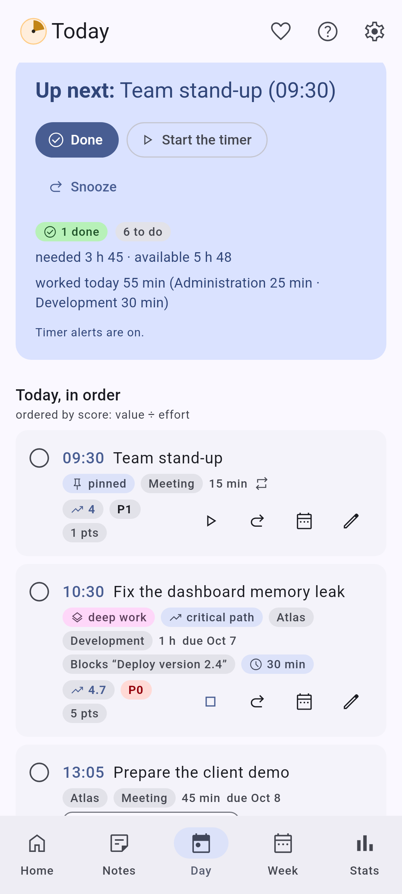
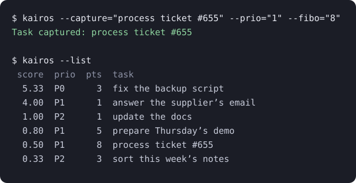

The story of Kairos
You capture. Kairos decides.
It is 1 pm. You have a meeting until 2. Your list holds 47 tasks, and not one of them says “start with me”.
Ten of them have been sitting there for weeks. In every to-do tool I tried, what you do not do never rises to the top: new tasks pile on top, old ones sink. Every morning you have to re-sort the list in your head before you can work.
The pile is endless. The tool might as well sort it for you.
The observation
To-do tools manage a list, more or less finely. None of them sorts it. I had the idea of merging three worlds: agile development (a backlog you prioritise continuously), a to-do tool and the GTD method (capture everything, then process it).
The result: a list that evolves by itself over time. You take care of GTD, Kairos tells you what to start with. You can trust it enough to unload your mind, and put your attention on something other than managing to-dos.

How it happened
- A script. The first version lived in a Linux terminal: a Python script that ranked my tasks with the WSJF score, and nothing else. It worked, and it changed my days.
- An interface. Then a real interface, served locally and started with systemd. The day I understood that the useful part was not the sorting but fitting tasks into the gaps of the calendar, the tool took its shape.
- Other people. Talking about it around me, I saw that the need was not only mine. A tool that only runs on my machine, with a service to install by hand, helped nobody else.
- Rebuilding everything. I rebuilt it all in Kotlin with Claude Code, to run everywhere: Android, Windows, Linux, macOS and the browser, with no account and no network.

No AI: machine learning
The next ideas came with the wish to do machine learning and fine statistics on your own way of working. No generative AI, no chatbot, no cloud: pure algorithmics, on your device, that sharpens over time and helps you understand how you work.
The goal: the more you use Kairos, the better it estimates how long things will take you, and it always tells you which task to do now.
Why 14h55
14h55 (2:55 pm) is the project’s code name. According to a study, it is the hour when we are statistically the least efficient. When you think about it, that is rather true. I found it interesting to take that into account: Kairos protects your deep-work slots and, in the afternoon, lets light tasks go ahead of complex ones.
Who did what
Claude Code let me rebuild everything in Kotlin. The AI is my pen and a creation accelerator; the rest is mine: I set the course, planned, guided in detail, wrote the specifications, corrected, structured the code, set up the CI and the builds, drew the boundaries and brought the theory. Every change starts with a spec, before the code.
I answer every piece of feedback
Kairos is the first software I have published, and I answer every issue. A few examples:
- #150: a request for a home screen widget on Android. Version 3.12 delivered it the next day, and what I rethought while building it gave quick capture.
- #88: syncing your devices without an account. Bigger than expected, with many edge cases; shipped in 4.0: one shared file, merged without losing anything.
- #65: a crash at startup that I could not reproduce. 3.3.0 added a crash report screen, which stays on your device and is only sent if you share it.
- #131: too many settings in one pile. They are sorted by category, each with an icon, since 3.7.
What I do not hide
- The macOS apps are not signed: Apple’s developer programme costs $99 a year, and I have not joined it (#116). At first launch, macOS asks you to confirm.
- On Windows, signing is ready on the project side and waiting for admission at SignPath (#117). Until then, SmartScreen may show “Windows protected your PC”.
- The Android APK is signed, its build is reproducible, and every release publishes its checksums (SHA256SUMS): you can check what you install.
Kairos may not be for you if…
- you want to work with others in real time: Kairos has no account and no server. The Team space is designed for a single manager, with file exchanges;
- you expect a generative AI, an assistant that talks back: Kairos has no chatbot and no cloud;
- you like arranging your list by hand, with your own tags and views: you can tune the score weights and pin a time, but the order is Kairos’s call.
Mentioned on
- AlternativeTo: Kairos’s listing, to rate it or suggest it as an alternative to another app.
- r/foss: the presentation post (October 2026).
You capture. Kairos decides.